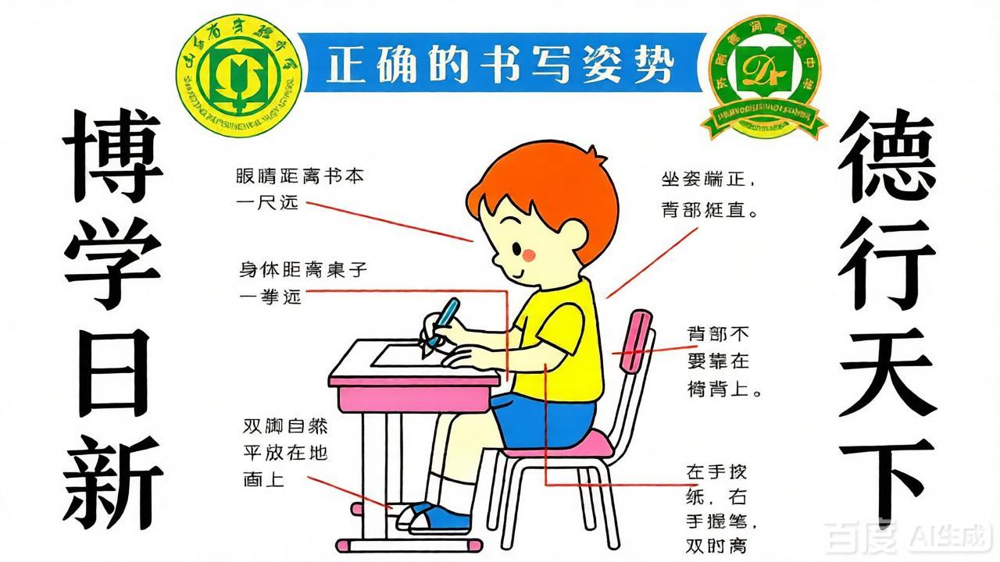

live preview · 33 keypoints

console
captures 异常 / 久坐提醒时自动留档
暂无截图
status
--
等待启动
camera idle
久坐时长
00:00
异常项
0
采集 / 推理
-- / --
标定状态
未标定
metrics
算法说明 (how it works)
流水线：33 关键点 → 可见性过滤 → 原始几何指标 → 滑动平均滤波 → 滞回阈值 + 时间累积确认 → 状态机聚合
所有几何量都除以肩宽做归一化，因此结果与相机距离、分辨率无关；坐标来自 MediaPipe Pose，检测在本机 WASM/GPU 完成，画面不会离开浏览器。
- head_drop 头部前倾：(ny − 肩中点y) / 肩宽，带符号，正值=低头；单向判定（坐更直不报）
- head_lateral 头部侧偏：(nx − 肩中点x) / 肩宽，比较时取绝对值，左右同等对待
- torso_lateral 躯干侧倾：(肩中点x − 髋中点x) / 肩宽，双向判定
- shoulder_tilt 肩部歪斜：|l肩y − r肩y| / 肩宽，双向判定
- face_to_shoulder 距离过近：耳距 / 肩宽，距离代理指标，越近比值越大，单向判定
为什么不会抖：滤波管数据层（3/6/9 帧滑动平均），滞回管边界（15% 回差），时间累积管决策（异常需持续 2/5/8 秒，恢复需 4/10/16 秒）——三者与帧率解耦。
判定优先级：肩歪 > 前倾 > 头偏 > 躯干倾 > 过近，状态灯同时汇总全部超阈项。
站立短路：双肩中点纵坐标上移超过阈值即判站立，清空确认状态并清零久坐计时（站姿下其余指标无意义）；人体短暂丢失 5 秒内不清零。